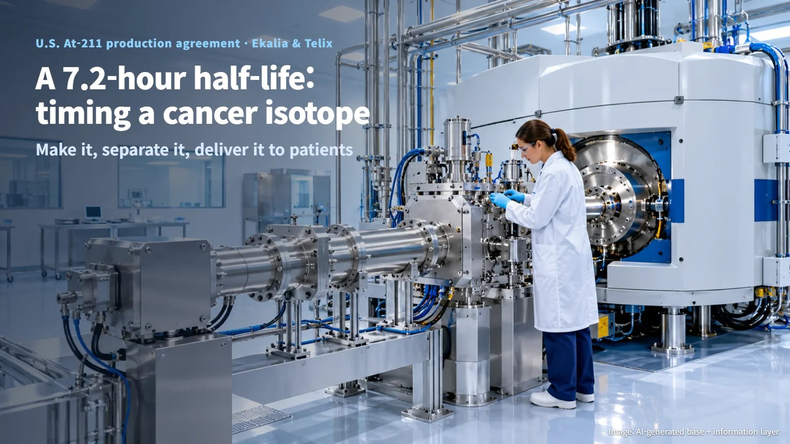
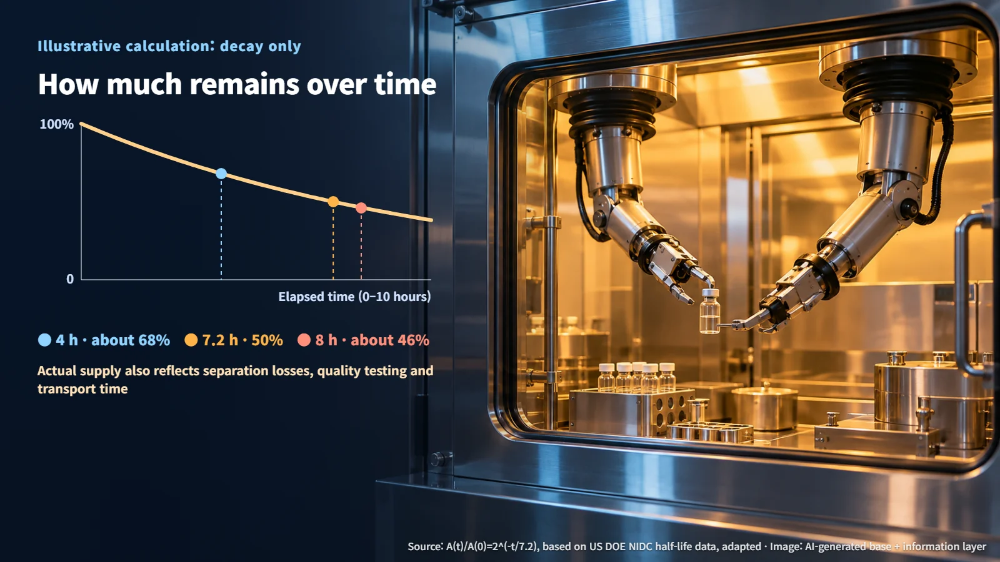

United States · Medical Isotopes
A Cancer Isotope With a 7.2-Hour Half-Life: How Astatine-211 Reaches Patients
With a half-life of about 7.2 hours, astatine-211 has to move from accelerator to patient on a tight clock, and Ekalia and Telix now plan a first U.S. production unit at Trevose, Pennsylvania.
Imagine a medicine made in the morning that has lost half of itself a little more than seven hours later. How would you produce it, and how would you get it to a patient in time? Most of us picture pharmaceuticals being made in a factory and stacked in a warehouse until needed. Some raw materials for medicines, however, shrink by the hour. The U.S. astatine-211 (At-211) production agreement announced on October 19, 2026, is about exactly this kind of material: how to make it and how to ship it.

7.2 Hours: Time Is Supply
At-211 is a radioactive isotope with a half-life of about 7.2 hours. The half-life is the time it takes for radioactivity to fall to half of its starting level. At-211 is being developed as a raw material for targeted alpha therapy, a treatment that delivers an alpha-emitting isotope to cancer cells.
The National Isotope Development Center (NIDC), part of the U.S. Department of Energy (DOE), describes this short half-life as a constraint on supply. In an illustrative calculation that considers decay alone, about 68% of the initial radioactivity remains after 4 hours and about 46% after 8 hours. In practice, recovery losses during separation, quality testing and transport delays come on top of that. The clock keeps running all the way from the production facility to the hospital, which is why delivery speed sets the amount that can actually be supplied.

Hitting a Target With Alpha Particles, Then Separating Fast
How is At-211 made? The International Atomic Energy Agency (IAEA) technical report TRS 468 describes a route in which a bismuth-209 target is bombarded with alpha particles. Written as a reaction, it is 209Bi(α,2n)211At. Here α is a helium nucleus and 2n stands for the two neutrons released during the reaction. The bismuth nucleus absorbs an alpha particle, emits two neutrons and becomes At-211.
When choosing the incident energy of the alpha particles, producers also weigh a competing reaction that creates At-210. Target cooling, irradiation conditions and impurity control are all linked, so production yield is assessed for each facility using its own target, beam and quality data.
After irradiation comes separation, in which At-211 is extracted from the target. A 2009 IAEA document describes a dry distillation route. In January 2025, NIDC highlighted work by researchers at Texas A&M who reached a 95% yield in 20 minutes using automated dissolution and column purification. Time passes at each of the four stages: target irradiation, separation and recovery, quality release and shipment, and final delivery. The faster and less lossy the separation, the more material reaches the patient. The separation process and yield to be used at the Trevose site have not been disclosed.
The Trevose Site and the Partners' Roles
At the center of the agreement is Ekalia, a joint venture of Belgium's IBA (Ion Beam Applications) and France's Framatome, listed as a company in formation at the time of the announcement. IBA contributes alpha-beam equipment technology, and Framatome contributes nuclear industry and isotope capabilities. Following its plan for a first production site in France, Ekalia announced that it had signed a U.S. At-211 production agreement with Australia's Telix.
The first production unit is planned for the Trevose site of RLS Radiopharmacies in Pennsylvania. Ekalia will draw on Telix's RLS radiopharmacy network and operating capabilities to prepare for operation, and it raised the possibility of further deployment within the RLS network as demand grows. The arrangement places a production unit inside a site that already has radiopharmaceutical manufacturing and distribution.
Telix secures long-term priority access to part of the production capacity, aiming to build a supply base that supports targeted alpha therapy development. A plan to support capacity for third-party research and industrial users was announced as well. The detailed start date, production volume, contract value and investment size have not been disclosed.
What Remains Before Operation: Licenses and Product Specifications
The project is currently at the stage of building a production and delivery partnership at the Trevose site. Before actual supply begins, licenses for the equipment and the material are still needed, along with detailed product specifications.
The Pennsylvania Department of Environmental Protection (DEP) requires a license to operate particle accelerators for industrial, research and medical use, and its rules call for notification through an application within 90 days of first ordering components. Using radioactive material produced by an accelerator goes through a separate materials licensing system. Manufacturers supply recipients that hold a valid license from the relevant authority, so the license scope of the production facility and that of the receiving institution have to fit together.
The announcement did not give the Trevose site's accelerator or At-211 material license numbers, the applicant, or the scope of any license amendment. As licensing, equipment investment, the commissioning schedule, production scale and the specific supply terms of Telix's access become public, it will be possible to gauge when operation can actually begin.
At-211, which must move through irradiation, separation, quality release and delivery within a 7.2-hour half-life, shows clearly that radiopharmaceuticals are a technology in which time and logistics are designed together. As much as the performance of the accelerator, how tightly the following few hours are planned determines how much medicine reaches the patient.